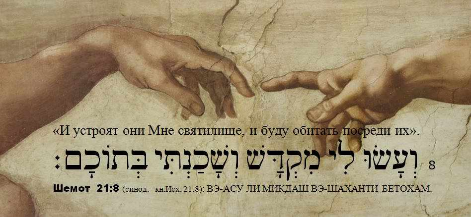
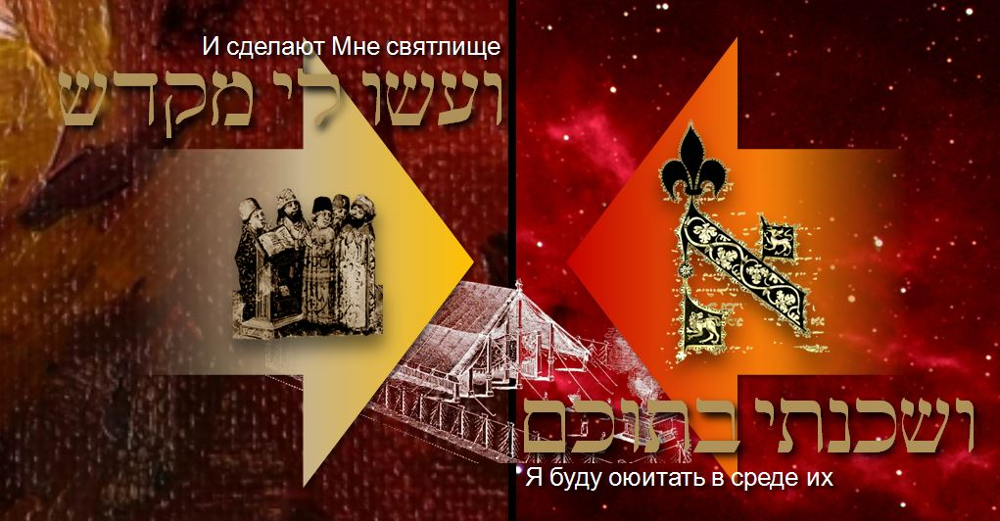

The Sanctuary: Mishkan and Mikdash
In Scripture we read more than once that God does not dwell in tents made with hands, even if they are made of stone. The whole earth cannot contain Him. Nevertheless, the Creator of the universe sets a condition for His dwelling in the midst of Israel: you must make Me a sanctuary!

This phrase contains two processes moving towards each other, which were to find their symbolic expression in the building entrusted to the artist Bezalel, but also to all Israel: "THEY shall make". Everyone whose heart was willing gave for this sanctuary, and many who were wise-hearted did particular kinds of work on it.
One word is MIKDASH (of the same root as the well-known word KADOSH, holy). MIKDASH is a sanctuary.
The other is MISHKAN (of the same root as the well-known word SHEKHINAH, the glory or presence of God, often used in the Talmud). MISHKAN is a dwelling place. In the Russian Synodal translation MISHKAN is "skiniya", the Tabernacle; the word SHEKHINAH can still be heard in it.
Hebrew is a verb-based language: in nouns one can see an action. So the word MIKDASH contains an action on the part of the people of Israel: dedication ("they shall make for Me"). This means: they will dedicate themselves to Me completely, their life, their worship, their creative work. With everything they create in their life they will make Me a sanctuary.
The Most High, in His turn, promises action on His part: "I will dwell among them". To dwell is SHAKHANTI. Other words of the same root are translated as to abide, to be neighbours, neighbour. That is: I will be very close to them and will be everything they need. Accordingly, the other name of the sanctuary in the Torah is MISHKAN.

God promises His presence in the midst of Israel (MISHKAN) in response to Israel's act of dedication, which in our case (Exod. 25) is symbolised by the creative work of making the sanctuary (MIKDASH).
This creative work becomes a visible expression of the intentions of the people's hearts, an expression of their readiness to be sanctified.
The Mikdash is a sign, a message to the people, something that moves them towards higher revelation. The Mishkan is a symbol of God's rest (it is no accident that the commandment of the Sabbath is literally woven into the instructions for building the Mishkan).
DANIEL KRUGLOV: musical improvisation on the weekly Torah portion (Shemot / Exod. 25:1–27:19)
Another version of the same video can be watched here (in Russian).
Author: Ephraim Kalish / Torah-Art
 The Menorah: Symbol of the Bezalel School
The Menorah: Symbol of the Bezalel School